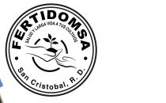

Story / valor de marca
FERTIDOMSA puede presentarse como un aliado que combina venta de insumos y orientación para mejores decisiones agrícolas.
Datos base del cliente
- Ubicación: Carretera principal Los Cacaos, sector El Llano, San Cristóbal, R.D.
- Horario: Lunes a sábado · 7:00 a. m. a 6:00 p. m.
- Contacto: 829-861-0344 · jenry@fertidomsa.com
- Objetivos: dar a conocer el negocio, generar cotizaciones y aumentar ventas.

Elemento distintivo de la marca usado como recurso gráfico.